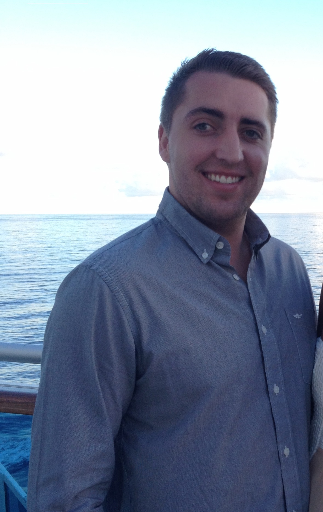

About Me

Graduated with a Bachelor’s of Science in Computer Information Systems from The W.A. Franke College of Business at Northern Arizona University. Currently, I'm in pursuit of employment opportunities to complement and grow my skills and knowledge within the technical industry. While being a full time employee here at GoDaddy, my goal is to develop new skills as well as tone my current, with plans to become knowledgeable and fluent in Full Stack Programming, to gain the experience to pursue a career in Web Development.
When I am not focused on studying, or at work, I enjoy spending time with my beautiful girlfriend, Julie. We've been together for almost 3 years now, we love watching movies and traveling to new places. As well as always trying to find the next best sushi spot in town!! Aside from all that, I do enjoy catching up with friends on the weekend, and playing video games.